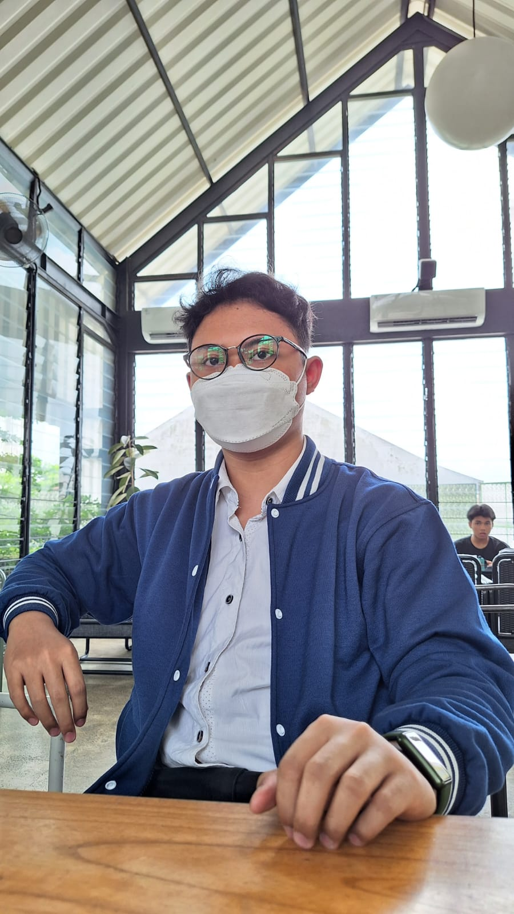

Muhammad Ilham Rasyid

Summary
i am a hardworking and dedicated individual with experience in front-end engineering and ui/ux design
Education
- Bachelor of Computer Science - Gunadarma University (2019-2023)
Work Experince
- Front-end Engineering Bootcamp - PT. Ruang Raya Indonesia.
February 2022 - July 2022
- Used jira to do project management tools
- Development of educational-based web applications to complete the final project with React JS
- UI/UX Designer Mastery - PT. Tech4impactebyte.
August 2022 - December 2022
- Completed a UI/UX design course using the design system method
- Designing e-learning based projects, conducting user research, pain points, how might we and developing wireframes and making prototyping
Skills
- Front-End : ⭐️⭐️⭐️⭐️⭐️
- UI/UX Designer : ⭐️⭐️⭐️⭐️⭐️
- Microsoft Office Suite : ⭐️⭐️⭐️⭐️⭐️
Award and Certifications
- Complete Best Front-End Engineer - PT. Ruang Raya Indonesia.
Other